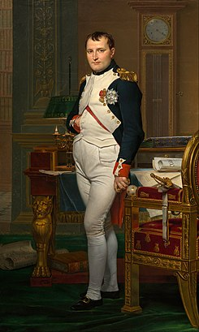

A França é um país rico em história, cultura e diversidade. Embora muitos a conheçam por seus ícones como a Torre Eiffel e a gastronomia requintada, há muito mais para explorar além dos clichês.

A história da França é marcada por eventos significativos, desde a Revolução Francesa até as Guerras Mundiais. Cada período deixou uma marca indelével na cultura e identidade do país.
O francês é a língua oficial, mas o país abriga uma variedade de dialetos e línguas regionais, refletindo sua rica diversidade cultural.
Le soleil brille dans le ciel,
Un oiseau chante sur le fiel.
Les fleurs s’ouvrent, tout est beau,
La nature danse sur l’eau.
tradução
O sol brilha no céu,
Um passarinho canta no galho.
As flores se abrem, tudo é belo,
A natureza dança sobre a água.
A gastronomia francesa é famosa mundialmente, com pratos icônicos como croissants, baguetes e queijos. Cada região tem suas especialidades, refletindo a diversidade do país.
A França é um centro cultural, com contribuições significativas nas artes, literatura e filosofia. Museus renomados, como o Louvre, abrigam obras-primas de artistas como Monet, Van Gogh e Picasso.
| Categoria | Tipo | Dado |
|---|---|---|
| População | Total | cerca de 67 milhões |
| População | Densidade | aproximadamente 119 hab/km² |
| Área | Territorial | 551.695 km² |
| Idioma | Oficial | Francês |
| Moeda | Principal | Euro (€) |
| Capital | Principal | Paris |
| Governo | Forma | República semipresidencialista |